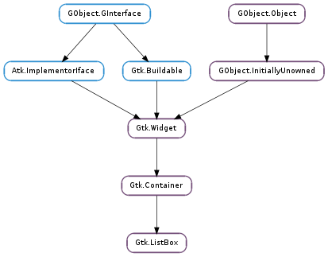

| static | new() |
| drag_highlight_row(row) | |
| drag_unhighlight_row() | |
| get_activate_on_single_click() | |
| get_adjustment() | |
| get_row_at_index(index_) | |
| get_row_at_y(y) | |
| get_selected_row() | |
| get_selection_mode() | |
| insert(child, position) | |
| invalidate_filter() | |
| invalidate_headers() | |
| invalidate_sort() | |
| prepend(child) | |
| select_row(row) | |
| set_activate_on_single_click(single) | |
| set_adjustment(adjustment) | |
| set_filter_func(filter_func, *user_data) | |
| set_header_func(update_header, *user_data) | |
| set_placeholder(placeholder) | |
| set_selection_mode(mode) | |
| set_sort_func(sort_func, *user_data) |
| Name | Type | Flags | Description |
|---|---|---|---|
| activate-on-single-click | bool | r/w | Activate row on a single click |
| selection-mode | Gtk.SelectionMode | r/w | The selection mode |
| Name | Parameters | Return | Description |
|---|---|---|---|
| activate-cursor-row | |||
| move-cursor | Gtk.MovementStep, int | ||
| row-activated | Gtk.ListBoxRow | The ::row-activated signal is emitted when a row has been activated by the user. | |
| row-selected | Gtk.ListBoxRow | The ::row-selected signal is emitted when a new row is selected, or (with a None row ) when the selection is cleared. | |
| toggle-cursor-row |
| Name | Type | Access |
|---|---|---|
| parent_instance | Gtk.Container | r |
Bases: Gtk.Container
A Gtk.ListBox is a vertical container that contains Gtk.ListBoxRow children. These rows can by dynamically sorted and filtered, and headers can be added dynamically depending on the row content. It also allows keyboard and mouse navigation and selection like a typical list.
Using Gtk.ListBox is often an alternative to Gtk.TreeView, especially when the list contents has a more complicated layout than what is allowed by a Gtk.CellRenderer, or when the contents is interactive (i.e. has a button in it).
Although a Gtk.ListBox must have only Gtk.ListBoxRow children you can add any kind of widget to it via Gtk.Container.add (), and a Gtk.ListBoxRow widget will automatically be inserted between the list and the widget.
The Gtk.ListBox widget was added in GTK+ 3.10.
| Returns: | a new Gtk.ListBox |
|---|---|
| Return type: | Gtk.Widget |
Creates a new Gtk.ListBox container.
| Parameters: | row (Gtk.ListBoxRow) – a Gtk.ListBoxRow |
|---|
This is a helper function for implementing DnD onto a Gtk.ListBox. The passed in row will be highlighted via Gtk.Widget.drag_highlight (), and any previously highlighted row will be unhighlighted.
The row will also be unhighlighted when the widget gets a drag leave event.
If a row has previously been highlighted via Gtk.ListBox.drag_highlight_row () it will have the highlight removed.
| Returns: | True if rows are activated on single click, False otherwise |
|---|---|
| Return type: | bool |
Returns whether rows activate on single clicks.
| Returns: | the adjustment |
|---|---|
| Return type: | Gtk.Adjustment |
Gets the adjustment (if any) that the widget uses to for vertical scrolling.
| Parameters: | index_ (int) – the index of the row |
|---|---|
| Returns: | the child Gtk.Widget |
| Return type: | Gtk.ListBoxRow |
Gets the n :th child in the list (not counting headers).
| Parameters: | y (int) – position |
|---|---|
| Returns: | the row |
| Return type: | Gtk.ListBoxRow |
Gets the row at the y position.
| Returns: | the selected Gtk.Widget |
|---|---|
| Return type: | Gtk.ListBoxRow |
Gets the selected row.
| Returns: | a Gtk.SelectionMode |
|---|---|
| Return type: | Gtk.SelectionMode |
Gets the selection mode of the listbox.
| Parameters: |
|
|---|
Insert the child into the list_box at position. If a sort function is set, the widget will actually be inserted at the calculated position and this function has the same effect of Gtk.Container.add ().
If position is -1, or larger than the total number of items in the list_box, then the child will be appended to the end.
Update the filtering for all rows. Call this when result of the filter function on the list_box is changed due to an external factor. For instance, this would be used if the filter function just looked for a specific search string and the entry with the search string has changed.
Update the separators for all rows. Call this when result of the header function on the list_box is changed due to an external factor.
Update the sorting for all rows. Call this when result of the sort function on the list_box is changed due to an external factor.
| Parameters: | child (Gtk.Widget) – the Gtk.Widget to add |
|---|
Prepend a widget to the list. If a sort function is set, the widget will actually be inserted at the calculated position and this function has the same effect of Gtk.Container.add ().
| Parameters: | row (Gtk.ListBoxRow or None) – The row to select or None |
|---|
Make row the currently selected row.
| Parameters: | single (bool) – a boolean |
|---|
If single is True, rows will be activated when you click on them, otherwise you need to double-click.
| Parameters: | adjustment (Gtk.Adjustment or None) – the adjustment, or None |
|---|
Sets the adjustment (if any) that the widget uses to for vertical scrolling. For instance, this is used to get the page size for PageUp/Down key handling.
In the normal case when the list_box is packed inside a Gtk.ScrolledWindow the adjustment from that will be picked up automatically, so there is no need to manually do that.
| Parameters: |
|
|---|
By setting a filter function on the list_box one can decide dynamically which of the rows to show. For instance, to implement a search function on a list that filters the original list to only show the matching rows.
The filter_func will be called for each row after the call, and it will continue to be called each time a row changes (via Gtk.ListBoxRow.changed ()) or when Gtk.ListBox.invalidate_filter () is called.
| Parameters: |
|
|---|
By setting a header function on the list_box one can dynamically add headers in front of rows, depending on the contents of the row and its position in the list. For instance, one could use it to add headers in front of the first item of a new kind, in a list sorted by the kind.
The update_header can look at the current header widget using Gtk.ListBoxRow.get_header () and either update the state of the widget as needed, or set a new one using Gtk.ListBoxRow.set_header (). If no header is needed, set the header to None.
Note that you may get many calls update_header to this for a particular row when e.g. changing things that don’t affect the header. In this case it is important for performance to not blindly replace an exisiting header widh an identical one.
The update_header function will be called for each row after the call, and it will continue to be called each time a row changes (via Gtk.ListBoxRow.changed ()) and when the row before changes (either by Gtk.ListBoxRow.changed () on the previous row, or when the previous row becomes a different row). It is also called for all rows when Gtk.ListBox.invalidate_headers () is called.
| Parameters: | placeholder (Gtk.Widget or None) – a Gtk.Widget or None |
|---|
Sets the placeholder widget that is shown in the list when it doesn’t display any visible children.
| Parameters: | mode (Gtk.SelectionMode) – The Gtk.SelectionMode |
|---|
Sets how selection works in the listbox. See Gtk.SelectionMode for details.
Note: Gtk.ListBox does not support Gtk.SelectionMode.MULTIPLE.
| Parameters: |
|
|---|
By setting a sort function on the list_box one can dynamically reorder the rows of the list, based on the contents of the rows.
The sort_func will be called for each row after the call, and will continue to be called each time a row changes (via Gtk.ListBoxRow.changed ()) and when Gtk.ListBox.invalidate_sort () is called.